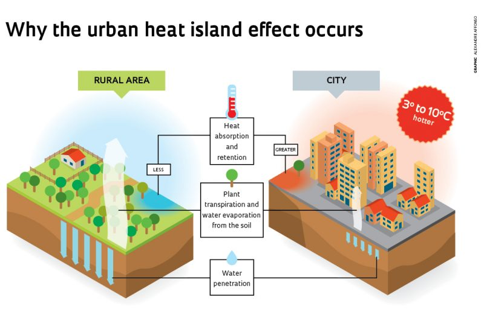
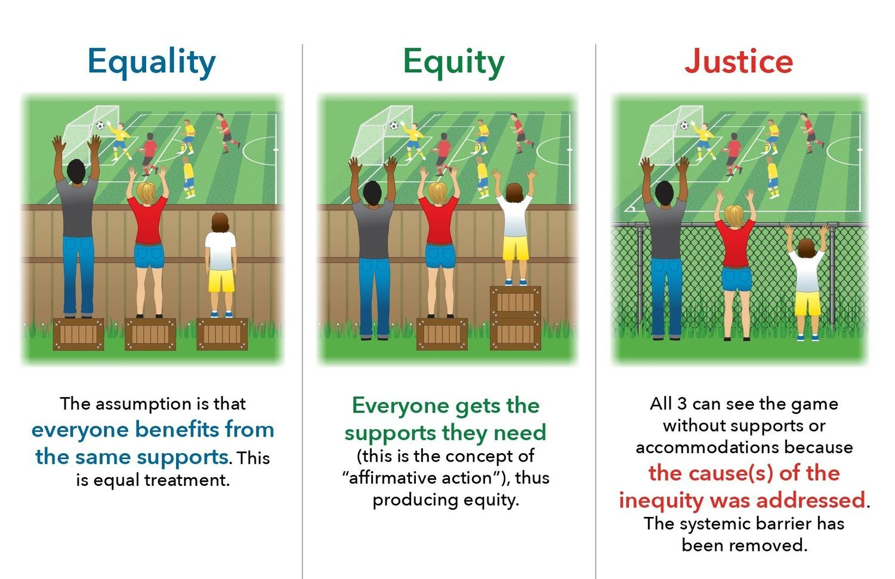
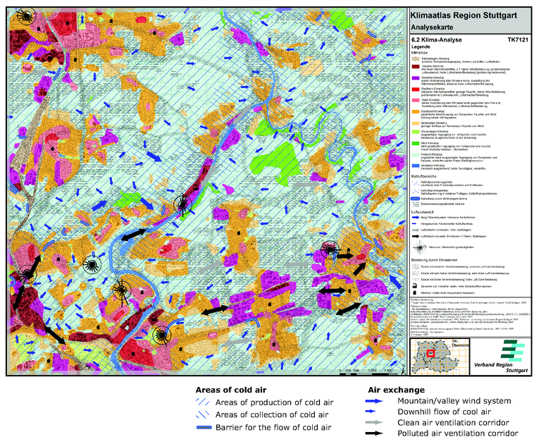

8. Temperature🌡️
This is a learning diary for week 8 (and finally, the last one! 🙌).
Let’s talk about the urban heat island and the ventilation corridors policy in Stuttgart, Germany.
8.1 Summary
8.1.1 What is Urban Heat Island(UHI)?
The phenomenon usually occurs in an urban/metropolitan area compared to rural areas due to human activities (e.g. pavement, concrete buildings, greenhouse effect due to exhaust gas and fine dust over the city, arrangement of buildings that block wind etc.)
It depends on the geographic location and climate of the city.
According to US EPA (2015), it increases energy costs (e.g. for air conditioning), air pollution levels, heat-related illness and mortality.🥵
Solution
- Basic solution: plant trees🌱 and make a green space
- Take actual action
- to use green roofs and lighter-coloured surfaces to reflect more sunlight and absorb less heat
- to use public transportation🚏 instead of private cars
8.1.2 What data do we need?
- EO data
- MODIS
- Landsat 8 TIRS Collection 2
- Meteorological data
- Temperature (historical/past, real-time)
- Precipitation
- Wind
- Spatial data(Administrative boundary data) from OpenStreetMap
- Census data
Think one more time☝️️
HOWEVER, can these data accurately cover/predict real-time air quality/UHI?
We should think about the range/period of data we use and whether the average value is significant.
8.1.3 Think before implementing a policy

| Equality | Equity | Justice |
|
|
|
|
|
|
- Are those considered in making urban policies? Who are the beneficiaries of this policy? = Is it effective?
- Is budgeting appropriate?
- Source : “Environmental Equity Vs. Environmental Justice: What’s the Difference?” (2021)
8.2 Application - A Policy of Stuttgart, Germany
8.2.1 How’s Sttuttgart?
- One of the representative automobile industry cities in southern Germany
- It had bad air quality and urban heat island issues because of the geography of a valley basin, its mild climate and its high volume of traffic etc.
8.2.2 Global policy : World Cities Report 2022
- Chapter 5: Securing a Greener Urban Future
- 5.5. Inclusive Planning Processes
- 5.5.2. Processes that include diverse perspectives in environmental decision-making
- Various social hierarchies should be considered from the urban planning stage for a sustainable urban future.
- 5.5.2. Processes that include diverse perspectives in environmental decision-making
- 5.5. Inclusive Planning Processes
- Chapter 6: Urban Planning for the Future of Cities
- 6.6. Concluding Remarks and Lessons for Policy
- Investment in green and renewable technologies and countermeasures against climate change is essential for urban resilience.
- 6.6. Concluding Remarks and Lessons for Policy
8.2.3 Local policy : Klimaatlas
A climatological map of Stuttgart since 2008
It is used by urban planners, architects, and residents in urban planning or architecture (a.k.a. environmental planning for architecture)
It classifies each area based on different types of standards.
- Klimatop, Wind direction, Location of artificial pollution sources, The area where UHI occurs etc.
- Klimatop
Minimum space with homogeneous climate characteristics (indicating land use based on climatic factors)
There are different categories: lake (water), forest, park/green area, suburb, city, city centre, factory, etc.
- Wind direction
An area of a cold air generation/accumulation/stagnation
To check the effects of air pollution

Source : “Climate Analysis Map for the Stuttgart Region, Also Showing so-Called Ventilation Paths Along with Other Climate Related Features European Environment Agency” (n.d.)
8.2.4 Is it genuinely effective for everyone?
The climate map of the entire Stuttgart area was made quite specific according to reasonable standards considering the differences in climate conditions and surrounding environments for each region to be developed.
If detailed guidelines are provided during urban planning or construction, it increases the probability of implementing the measures accurately.
Therefore, Klimaatlas functions as a practical action plan, and this plan ultimately contributes to creating an environmentally friendly city.
8.3 Reflection
When I work in the field of urban planning, I sometimes think that white papers are abstract works of art, a collection of only good words. In other words, it means a blueprint does not include a practical plan. So I have also considered whether a broad plan that is ineffective is really necessary.
However, considering the nature of the plan is for the future, various global schemes play a fundamental role as their existence. So we need to think about how much real the local policy can have on the city.
I also rethought what the concern of urban planners is when it comes to making an urban policy for all citizens. It would be included whether only certain groups benefit from applying the new policy and whether the policy is a fundamental solution to certain urban problems.